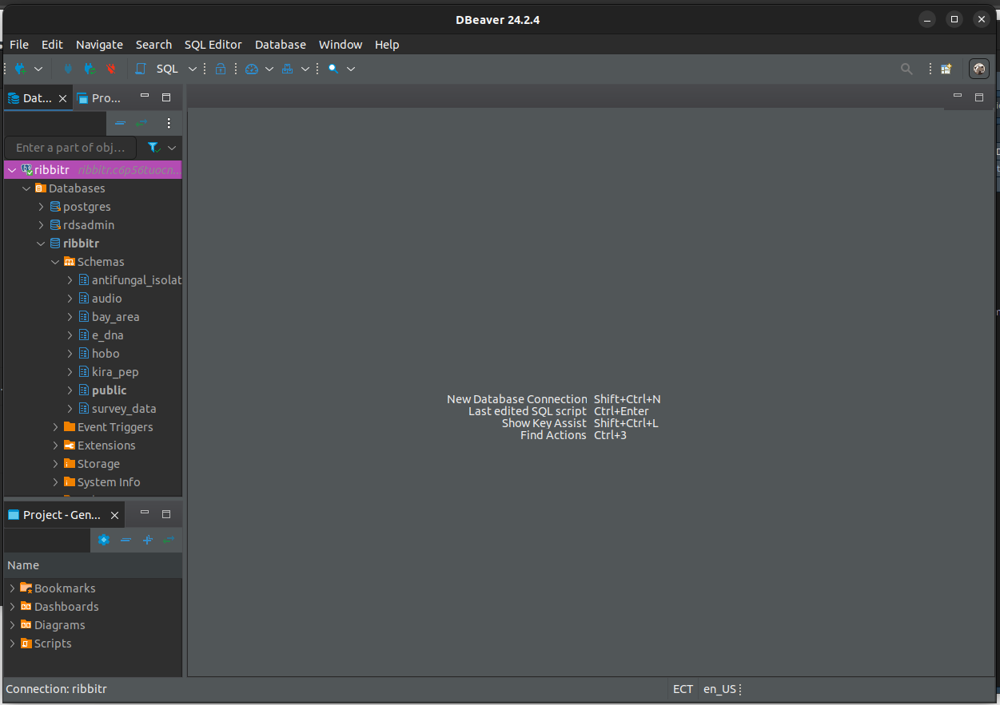
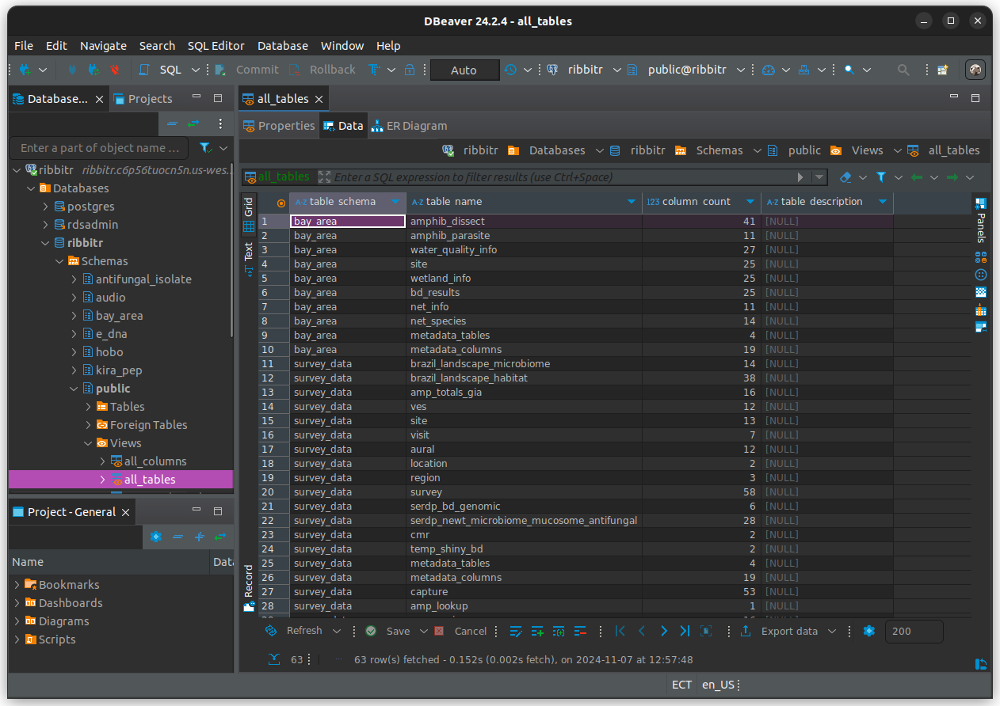
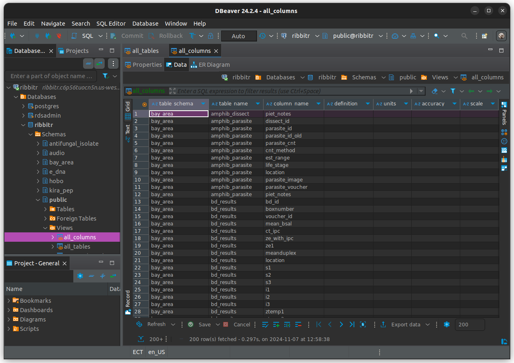
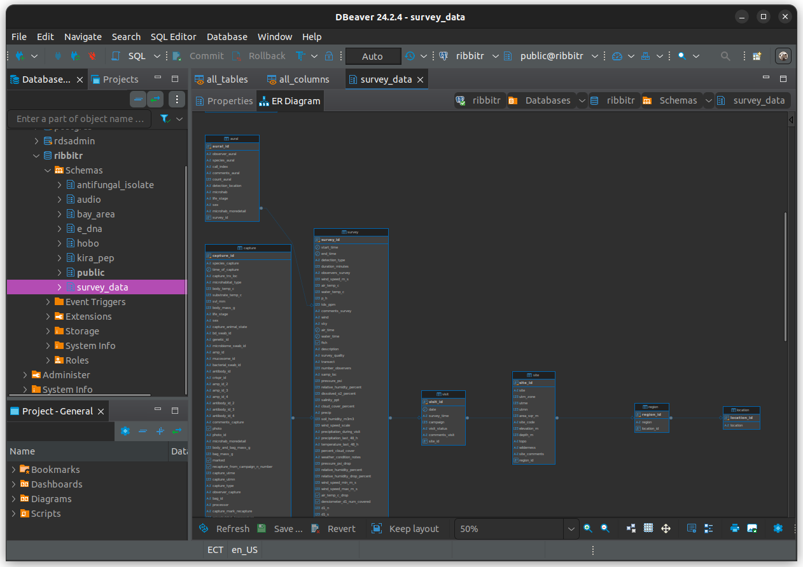
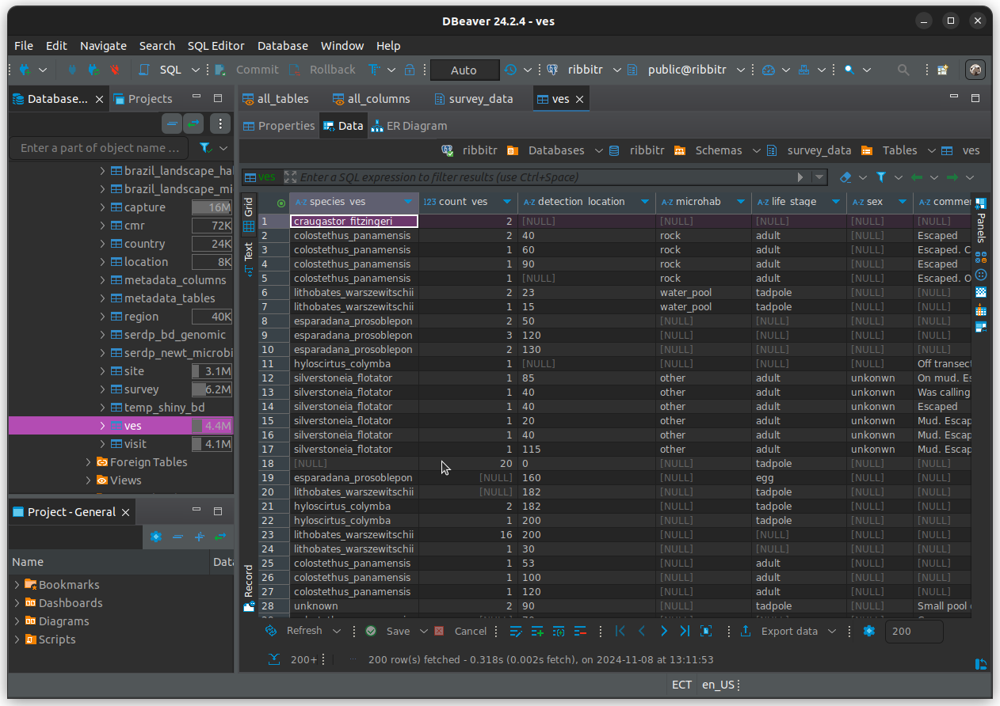

# minimal packages for RIBBiTR DB data discovery
librarian::shelf(tidyverse, dbplyr, RPostgres, DBI, RIBBiTR-BII/ribbitrrr)2. Data Discovery
This tutorial is available as a .qmd on Github.
Motivation
- Explore what data are currently available on the database
- Identify structure of data of interest to inform access
Let’s set up our environment to get ready to explore the database.
Load packages
Establish database connection
# establish database connection
dbcon = hopToDB("ribbitr")Connecting to database... Success!Load database metadata
Data structure: Schemas, tables, columns and rows
The RIBBiTR database is organized into “schemas” (think of these as folders), which can contain any number of tables. Each table consists of columns (“variables”) and rows (“entries”).
Metadata: Data about data
We keep track of information regarding what tables, and columns exist in the database, and what information they are designed to describe, using table and column metadata. To begin our process of data discovery, let’s learn what tables are present in the data by loading the table metadata.
Table Metadata
# load table "all_tables" from schema "public"
mdt = tbl(dbcon, Id("public", "all_tables")) %>%
collect()Some basic database commands
Before we take a look at the metadata you just pulled, let’s understand the command we just ran.
dplyr::tbl()- This function is used to create a “lazy” table from a data source. To specify the source, we provide the database connectiondbcon, as well as a pointer or “address” for the table of interest using theId()function. A “lazy” table means that the data only pulled when explicitly asked for. Seecollect()below.dbplyr::Id()- This function is a pointer to pass hierarchical table identifiers (you can think of this as an address for a given table). In this case we use it to generate an pointer for the table “all_tables” in schema “public”.dplyr::collect()- thetbl()function generates a “lazy” table, which is basically a shopping list for the data you want to pull. In order to actually pull the data from the server to your local machine (ie. “do the shopping”) we need to pipe in thecollect()function.
Also try: Run the code above without collect(), to see what a lazy table looks like.
Now let’s take a look at the table metadata to explore what schemas and tables exist.
view(mdt)Column metadata
Suppose our interest is in the survey_data schema. Let’s take a closer look at the tables here by collecting metadata on table columns in this schema.
# load table "all_columns" from schema "public"
mdc = tbl(dbcon, Id("public", "all_columns")) %>%
filter(table_schema == "survey_data") %>%
collect()Notice we used the dplyr::filter() command on the lazy table before running collect(). This effectively revised the shopping list before going to the store, rather than bringing home the entire store and then filtering for what you want in your kitchen. Much less (computationally) expensive!
Let’s check out the column metadata, and see what you can learn.
view(mdc)
# list the columns in our column-metadata table
colnames(mdc) [1] "table_schema" "table_name"
[3] "column_name" "definition"
[5] "units" "accuracy"
[7] "scale" "format"
[9] "natural_key" "reviewed"
[11] "data_type" "character_maximum_length"
[13] "numeric_precision" "datetime_precision"
[15] "is_nullable" "column_default"
[17] "ordinal_position" "pg_description"
[19] "key_type" Curious about what a certain metadata column means? There’s metadata for that (metametadata?)!
# vew metadata on metadata columns
view(mdc %>% filter(table_name == "metadata_columns"))A few columns to point out:
- definition
- units
- data_type
- natural key
(more on keys later)
Our first(?) data table
Ok, let’s try to apply some of what we have learned by pulling directly from a data table. We can begin by taking a look at the visual encounter surveys (VES).
# create lazy table for ves (visual encounter survey) table
db_ves = tbl(dbcon, Id("survey_data", "ves"))Do these functions look familiar? Turns out, we were pulling data all along! Of course, this is a lazy table (ie. shopping list) so it doesn’t look like data yet. Let’s see what we can learn from it before going to the store to collect the data.
What columns the table contains:
# return columns of lazy table
colnames(db_ves) [1] "species_ves" "count_ves" "detection_location"
[4] "microhab" "life_stage" "sex"
[7] "comments_ves" "microhab_moredetail" "observer_ves"
[10] "visual_animal_state" "ves_id" "survey_id" How many total rows a table contains:
# count rows
db_ves %>%
summarise(row_count = n()) %>%
pull(row_count)integer64
[1] 28390The pull() function executes a query to return a single column or variable, synonymous with the collect() function which returns a collection of variables as a table.
How many rows after filtering for unknown species:
# count rows with known species
db_ves %>%
filter(!is.na(species_ves),
species_ves != "unknown_species") %>%
summarise(row_count = n()) %>%
pull(row_count)integer64
[1] 28232How many rows corresponding to a each life stage:
# count rows by life stage
db_ves %>%
select(life_stage) %>%
group_by(life_stage) %>%
summarise(row_count = n()) %>%
arrange(desc(row_count)) %>%
collect()# A tibble: 8 × 2
life_stage row_count
<chr> <int64>
1 tadpole 10276
2 adult 9551
3 subadult 7162
4 <NA> 764
5 eggmass 625
6 egg 9
7 juvenile 2
8 metamorph 1Disconnect
Reinforcing best practice by disconnecting from the server.
dbDisconnect(dbcon)Let’s set up our environment to get ready to explore the database.
Load packages
# minimal packages for Python DB data discovery
import ibis
from ibis import _
import pandas as pd
import dbconfigEstablish database connection
# Establish database connection
dbcon = ibis.postgres.connect(**dbconfig.ribbitr)Load database metadata
Data structure: Schemas, tables, columns and rows
The RIBBiTR database is organized into “schemas” (think of these as folders), which can contain any number of tables. Each table consists of columns (“variables”) and rows (“entries”).
Metadata: Data about data
We keep track of information regarding what tables, and columns exist in the database, and what information they are designed to describe, using table and column metadata. To begin our process of data discovery, let’s learn what tables are present in the data by loading the table metadata.
Table Metadata
# load table "all_tables" from schema "public"
mdt = dbcon.table(database = "public", name = "all_tables").to_pandas()Some basic database commands
Before we take a look at the metadata you just pulled, let’s understand the command we just ran.
ibis.table()- This function is used to create a “lazy” table from a data source. To specify the source, we modify the database connectiondbcon. We specify the schema for the table aspublic(note ibis calls this “database”), as well as the table nameall_tables. A “lazy” table means that the data only pulled when explicitly asked for. Seeexecute()below.ibis.to_pandas()- thetable()function generates a “lazy” table, which is basically a shopping list for the data you want to pull. In order to actually pull the data from the server to your local machine (ie. “do the shopping”) we need to collect the lazy table by chaining theto_pandas()function.
Also try: Run the code above without to_pandas(), to see what an uncollected lazy table looks like.
Now let’s take a look at the table metadata to explore what schemas and tables exist.
print(mdt) table_schema table_name column_count table_description
0 bay_area amphib_dissect 41 None
1 bay_area amphib_parasite 11 None
2 bay_area water_quality_info 27 None
3 bay_area site 25 None
4 bay_area wetland_info 25 None
.. ... ... ... ...
58 kira_pep survey 17 None
59 kira_pep ves 9 None
60 kira_pep capture 24 None
61 kira_pep metadata_tables 4 None
62 kira_pep metadata_columns 19 None
[63 rows x 4 columns]Column metadata
Suppose our interest is in the survey_data schema. Let’s take a closer look at the tables here by collecting metadata on table columns in this schema.
# load table "all_columns" from schema "public"
mdc = (
dbcon.table(database="public", name="all_columns")
.filter(_.table_schema == 'survey_data')
.to_pandas()
)Notice we used the ibis.filter() command on the lazy table before calling to_pandas(). This effectively revised the shopping list before going to the store, rather than bringing home the entire store and then filtering for what you want in your kitchen. Much less (computationally) expensive!
Let’s check out the column metadata, and see what you can learn.
# view dataframe
print(mdc) table_schema table_name ... pg_description key_type
0 survey_data site ... None None
1 survey_data site ... None None
2 survey_data site ... None None
3 survey_data capture ... None None
4 survey_data metadata_columns ... None PK
.. ... ... ... ... ...
335 survey_data ves ... None None
336 survey_data ves ... None None
337 survey_data ves ... None None
338 survey_data ves ... None None
339 survey_data ves ... None FK
[340 rows x 19 columns]# list the columns in our column-metadata table
mdc.columnsIndex(['table_schema', 'table_name', 'column_name', 'definition', 'units',
'accuracy', 'scale', 'format', 'natural_key', 'reviewed', 'data_type',
'character_maximum_length', 'numeric_precision', 'datetime_precision',
'is_nullable', 'column_default', 'ordinal_position', 'pg_description',
'key_type'],
dtype='object')Curious about what a certain metadata column means? There’s metadata for that (metametadata?)!
# view metadata on metadata columns
metameta = mdc[mdc['table_name'] == 'metadata_columns']
print(metameta) table_schema table_name ... pg_description key_type
4 survey_data metadata_columns ... None PK
5 survey_data metadata_columns ... None None
6 survey_data metadata_columns ... None None
7 survey_data metadata_columns ... None None
8 survey_data metadata_columns ... None None
9 survey_data metadata_columns ... None None
10 survey_data metadata_columns ... None None
11 survey_data metadata_columns ... None None
12 survey_data metadata_columns ... None None
99 survey_data metadata_columns ... None None
254 survey_data metadata_columns ... None None
255 survey_data metadata_columns ... None PK
256 survey_data metadata_columns ... None None
257 survey_data metadata_columns ... None None
258 survey_data metadata_columns ... None PK
259 survey_data metadata_columns ... None None
260 survey_data metadata_columns ... None None
261 survey_data metadata_columns ... None None
263 survey_data metadata_columns ... None None
[19 rows x 19 columns]A few columns to point out:
- definition
- units
- data_type
- natural key
(more on keys later)
Our first(?) data table
Ok, let’s try to apply some of what we have learned by pulling directly from a data table. We can begin by taking a look at the visual encounter surveys (VES).
# create lazy table for ves (visual encounter survey) table
db_ves = dbcon.table(database="survey_data", name="ves")Do these functions look familiar? Turns out, we were pulling data all along! Of course, this is a lazy table (ie. shopping list) so it doesn’t look like data yet. Let’s see what we can learn from it before going to the store to collect the data.
What columns the table contains:
# return columns of lazy table
db_ves.columns['species_ves', 'count_ves', 'detection_location', 'microhab', 'life_stage', 'sex', 'comments_ves', 'microhab_moredetail', 'observer_ves', 'visual_animal_state', 'ves_id', 'survey_id']How many total rows a table contains:
# count rows
(db_ves
.count()
.execute())28390The ibis.execute() function executes a query and returns the result, regardless of the format. This is synonymous with the to_pandas() function which returns query results as a pandas dataframe where possible.
How many rows after filtering for unknown species:
# count rows with known species
filtered_row_count = (
db_ves
.filter(_.species_ves.notnull() & (_.species_ves != 'unknown_species'))
.count()
.execute())
print(filtered_row_count)28232How many rows corresponding to a each life stage:
# count rows by life stage
life_stage_counts = (
db_ves.group_by('life_stage')
.aggregate(row_count=_.count())
.order_by(_.row_count.desc())
.to_pandas()
)
print(life_stage_counts) life_stage row_count
0 tadpole 10276
1 adult 9551
2 subadult 7162
3 None 764
4 eggmass 625
5 egg 9
6 juvenile 2
7 metamorph 1Disconnect
Reinforcing best practice by disconnecting from the server.
# close connection
dbcon.disconnect()Double-click on the ribbitr connection in the “Database Navigator” panel to begin your connection. Once connected you should be able to navigae a dropdown menu to explore the connection.
Load database metadata
Data structure: Schemas, tables, columns and rows
The RIBBiTR database is organized into “schemas” (think of these as folders), which can contain any number of tables. Each table consists of columns (“variables”) and rows (“entries”). You can explore this structure through the dropdown menu in the “Database Navigator” panel on the left.

Databases -> ribbitr -> SchemasMetadata: Data about data
We keep track of information regarding what tables, and columns exist in the database, and what information they are designed to describe, using table and column metadata. To begin our process of data discovery, let’s learn what tables are present in the data by loading the table metadata.
Table Metadata
 ribbitr -> Schemas -> public -> Views -> all_tables (double-click). Select the Data tab."> See what you can learn about the tables in the database form the table metadata.
Column metadata
Suppose our interest is in the survey_data schema. Let’s take a closer look at the tables here by collecting metadata on table columns in this schema.
 ribbitr -> Schemas -> public -> Views -> all_columns (double-click). Select the Data tab."> Click on the dropdown arrow next to table_schema, click on Order by table_schema ASC. Repeat for the table_name and column_name columns.
Scroll down until you see rows with table_schema = survey_data. Explore a table of interest t see what you can learn.
Curious about what a certain metadata column means? There’s metadata for that (metametadata?)! Scroll down to table_name = metadata_columns to learn what the different columns in the current table mean.
A few columns to point out:
- definition
- units
- data_type
- natural key
(more on keys later)
Schema sructure

Databases -> ribbitr -> Schemas -> survey_data. Right-click and select View Schema. Select the ER Diagram tab.This shows a diagram of the different tables within the surevy_data schema, as well as their columns and any relationships between tables. This is a useful visual reference for later, when we begin joining tables.
Our first data table
To begin looking at data, let’s navigate to the visual encounter surveys (VES).
 ribbitr -> Schemas -> survey_data -> Tables -> ves (double-click). Select the Data tab."> This is your first look at field data within the database! From here you can explore organizing the data by columns, as well as exporting the table to a .csv.